CAPA
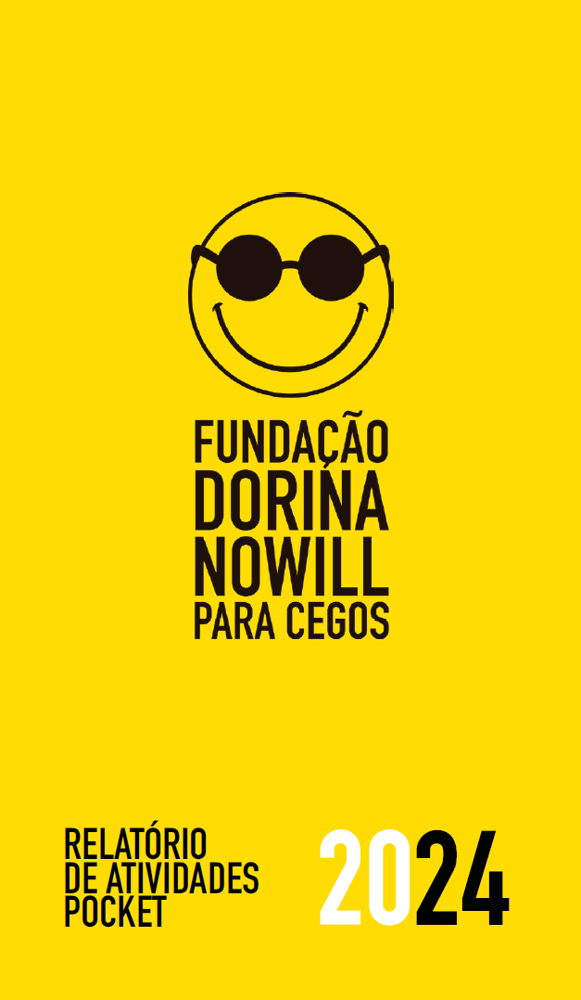
1
Palavra da
Presidência e da Superintendência
A Fundação Dorina Nowill para Cegos conquistou muitos marcos em 2024. Mês a mês, nossa equipe atuou com coesão e empenho, em busca de cada objetivo.
Inspirados pelo ano paralímpico, tivemos a entrada no mundo do esporte, com diversas novidades, parcerias e ações!
Fizemos o lançamento oficial da Fundação Dorina Esporte, no Centro de Treinamento Paralímpico Brasileiro, em São Paulo, ao lado de duas renomadas instituições: a Naurú, para iniciação ao Atletismo, e o Cadevi, apoiando a equipe masculina de Goalball.
Seguimos expandindo as fronteiras da Fundação no Brasil e no mundo. Fizemos a cobertura das Paralimpíadas, em Paris, com o nosso conselheiro e fotógrafo cego, João Maia, que, a cada clique, trouxe a emoção de presenciar cada vitória brasileira.
Outra novidade foi o Takkyu Volley, que já rendeu a participação dos nossos atletas em uma competição em São Paulo. A modalidade é oferecida a todos que são atendidos na Fundação e queiram participar, mesclando idades e gêneros.
Ainda em reabilitação, fizemos parcerias de sucesso com o programa remoto de apoio à inclusão. Compartilhamos nosso conhecimento com o Instituto Sul-Mato-Grossense para Cegos Florivaldo Vargas (ISMAC) e com Associação Catarinense para Integração do Cego (ACIC), com o objetivo de ampliar os atendimentos às pessoas cegas e com baixa visão e expandir nossa experiência para outros estados brasileiros.
Essas foram ações de nosso Planejamento Estratégico, que visam aumentar, cada vez mais, a nossa atuação. Assim como o investimento na estrutura da Fundação, com a reforma que ampliará a nossa capacidade de atendimento, além da aquisição de um novo prédio. A meta é que, até 2026, o número de pessoas atendidas aumente em 50%.
Podemos dizer que o fechamento de 2024 foi marcado por recordes! Alcançamos o maior número de atendimentos da nossa história e muitas outras conquistas que você vai conferir neste relatório. Esperamos que você continue conosco nessa torcida pelos próximos anos para que, juntos, possamos superar os obstáculos e ter ainda mais motivos para celebrar!
Francisco H. Della Manna
Presidente do Conselho de Curadores (2019 – 2024)
Alexandre Munck
Superintendente Executivo
Sobre a Fundação
Dorina Nowill para Cegos
Promover a autonomia e a independência de pessoas cegas e com baixa visão e, ao mesmo tempo, conscientizar a sociedade sobre inclusão e acessibilidade são os objetivos da Fundação Dorina Nowill para Cegos.
O nome da instituição vem da sua fundadora, que perdeu a visão aos 17 anos, mas jamais desistiu de estudar e ler. Na época, ela encontrou muitas barreiras e começou sua luta para ter mais livros em Braille no Brasil. Assim começou, em 1946, a Fundação para o Livro do Cego no Brasil, com a missão de produzir livros em Braille — atividade que, até hoje, 78 anos depois, segue sendo realizada na Fundação.
Mas Dorina levou seu sonho muito além, e outras missões foram surgindo em sua trajetória. Ao longo desses anos, a Fundação se modernizou, inovou e evoluiu em diversas áreas na inclusão desse público, tanto nas soluções das áreas editorial, gráfica e audiovisual como nos serviços de apoio à inclusão. Reconhecida no Brasil e no mundo pelo trabalho que realiza com excelência, a Fundação Dorina completa mais um ano de muito trabalho e ações transformadoras, não só para pessoas com deficiência, mas também para cada um de nós.
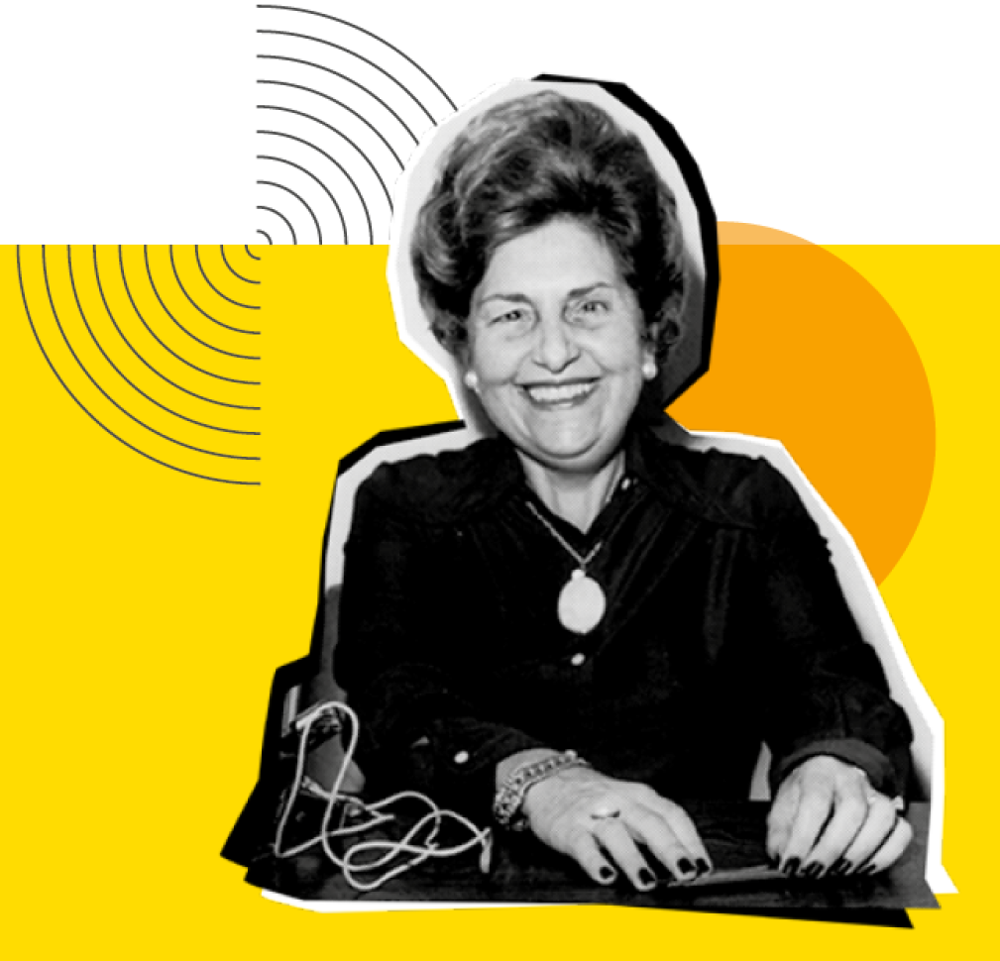
2
Dorinateca
Biblioteca Digital
Da Fundação
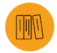
5.735 obras no acervo
2.427 downloads
1.531 leitores cadastrados
1.020 obras emprestadas para todo o Brasil
Rede de
Leitura Inclusiva
A Rede de Leitura Inclusiva faz um trabalho com as instituições (escolas, bibliotecas, centros culturais, ONGs) com o objetivo de disseminar práticas de leitura com acessibilidade e ações com livros em diversas cidades do Brasil.
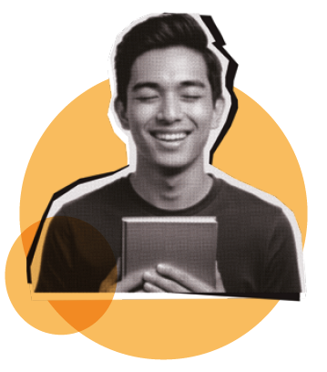
• 3.092 pessoas impactadas diretamente com as ações da Rede.
• 1.000 instituições cadastradas, sendo 416 novos cadastros.
• 860 livros redistribuídos para 92 instituições no Brasil.
• 428 municípios atendidos.
• 14 cidades contempladas com encontros presenciais.
• 105 ações sobre leitura inclusiva e acessibilidade.
Projeto LEGO®
Braille Bricks
O LEGO® Braille Bricks, iniciativa da Fundação Dorina Nowill para Cegos em parceria com a Fundação LEGO®, transforma as peças de LEGO® em um sistema de leitura e escrita Braille. Em 2024, foram:
4.435 kits distribuídos

3.447 educadores inscritos no curso de capacitação com carga horária de 100 horas

29 municípios parceiros
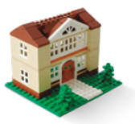
2.301 escolas
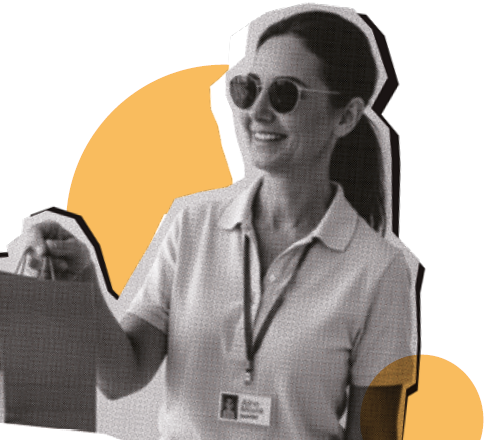
Acesso à
Autonomia
As equipes multidisciplinares da Fundação Dorina Nowill para Cegos oferecem possibilidades de uma vida com mais autonomia e independência aos clientes.
1.791 pessoas cegas ou com baixa visão foram atendidas pelas áreas de habilitação e reabilitação, além de 1.552 familiares.
Mais de 50.612 atendimentos feitos tanto para pessoas com deficiência visual quanto para seus familiares.
3
Propósito, Valores & Visão
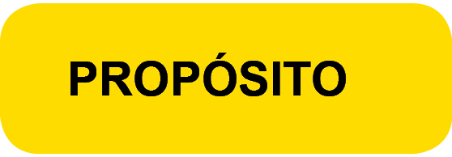
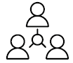
Promover a inclusão e acessibilidade às pessoas cegas e com baixa visão para, juntos, transformar vidas e a sociedade.
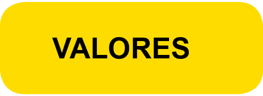

• Ética é inegociável.
• Transparência no que fazemos e como fazemos.
• Respeito é tão bom que não dispensamos.
• Diversidade é um fato; inclusão é nossa escolha.
• Perseverança em tudo que fazemos, por isso não desistimos.
• Compromisso com nosso propósito.
• Inovação para construir o futuro valorizando o nosso legado.
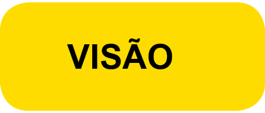
Ser reconhecida mundialmente como referência em protagonismo inclusivo, expandindo, inovando e multiplicando ações de impacto para todas as gerações.
Números da
Deficiência Visual no Mundo
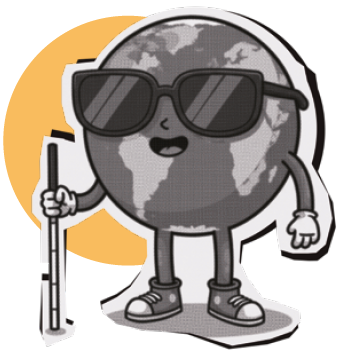
São 253 milhões de pessoas com deficiência visual no mundo.
Segundo a Organização Mundial de Saúde (OMS), se houvesse um número maior de ações efetivas de prevenção e/ou tratamento, entre 60% e 80% dos casos de cegueira poderiam ser evitados.
Acesso à
Informação
A Fundação leva o mundo da imaginação e do conhecimento a milhares de pessoas cegas e com baixa visão do país por meio dos livros acessíveis, didáticos e literários, em diversos formatos.
Números das soluções em acessibilidade da Fundação Dorina em 2024:
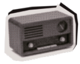
ÁUDIO
Produção de 299 projetos, sendo 36.714 páginas.
VÍDEO
Foram realizados 236 vídeos do PNLD, com a produção de cerca de 40 gravados, editados e produzidos.
DIGITAL
Produção de mais de 76.940 páginas e 996 títulos.
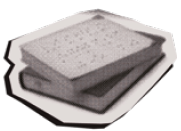
BRAILLE
Impressão de mais de 7 milhões de páginas em Braille, com a editoração de 266.024 páginas.
4
Acesso à
Educação
CURSOS
São realizados cursos para pessoas cegas e com baixa visão que ajudam no encaminhamento para o mercado de trabalho, seja para trabalhar em uma empresa ou para abrir o próprio negócio.
Participam alunos de diversos estados do Brasil, já que o formato de ensino a distância (EaD) proporciona a ampliação do atendimento para além dos limites de São Paulo.
Novos cursos foram oferecidos aos clientes da Fundação em 2024, resultando em 319 alunos qualificados em: artes; atendimento ao cliente; empreendedorismo na era digital; informática; inglês; marketing digital; massoterapia básica e intermediária; meditação; coral; musicografia Braille; musicoterapia; teatro e técnicas administrativas.
Uma novidade foi o oferecimento às famílias dos clientes das oficinas de Braille e transcrição básica, colaborando ainda mais para a inclusão também dos familiares de pessoas com deficiência.
CENTRAL DE FORMAÇÕES
A Fundação Dorina oferece cursos e capacitações, presenciais e a distância (EaD), na área de acessibilidade. Entre os temas, um dos mais acessados é o de Audiodescrição, que já vem sendo exigido em diversos contextos. Todos os cursos disponíveis na plataforma são gratuitos para pessoas com deficiência visual previamente cadastradas em nossa biblioteca digital, a Dorinateca.
Além disso, a equipe da Fundação também realiza capacitações customizadas em empresas, segmentadas de acordo com o interesse de cada cliente. Uma das grandes ações realizadas em 2024 foi a mudança da plataforma de vendas da Central de Formações, que ganhou novo layout, mais facilidade para acesso e a ampliação da oferta de cursos.
Também foram lançados dois novos cursos: Introdução à Editoração Braille e Produção de Audiolivros, para a produção de livros acessíveis. Além disso, foi colocado em prática o curso de Capacitação em Orientação e Mobilidade (1ª turma), com duração de 4 meses, e, por meio de uma parceria, a Fundação realizou um curso presencial de Narração de Audiolivro (1ª turma).
Por fim, uma grande conquista: o curso de Formação de Educadores para o uso do LEGO® Braille Bricks foi incluído na plataforma da Fundação.
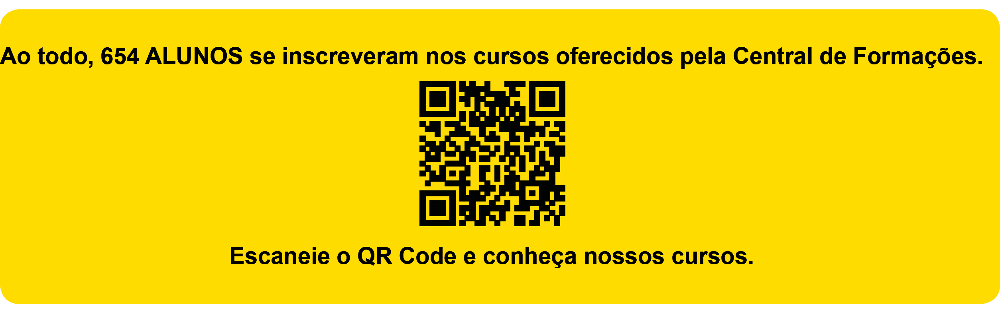
Acesso ao
Trabalho
A equipe de Empregabilidade possui um banco de talentos formado por pessoas cegas e com baixa visão que têm interesse em uma vaga no mercado de trabalho. Por meio de cursos gratuitos, palestras e outros eventos, esses candidatos são preparados para a entrevista e o dia a dia no trabalho.
Além disso, a Empregabilidade também possui um cadastro com empresas interessadas em contratar pessoas com deficiência visual. Assim como os candidatos são preparados, as empresas passam por um amplo trabalho de conscientização, para que as contratações desse público sejam além da necessidade de cumprir a lei de cotas, mas tenham um significado. O objetivo é promover a inclusão real, que representa ganhos para as pessoas e para as empresas.
1.288 pessoas atendidas

144 empresas sensibilizadas
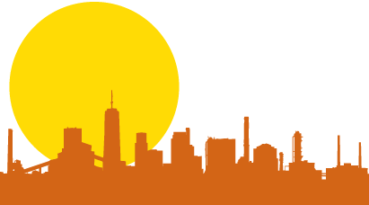
5
Fonte de Recursos 2024
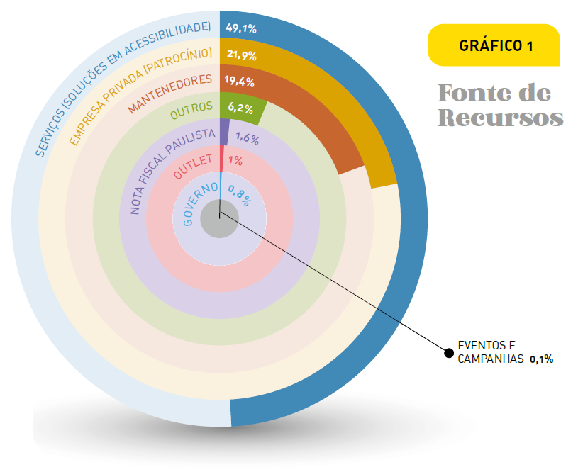
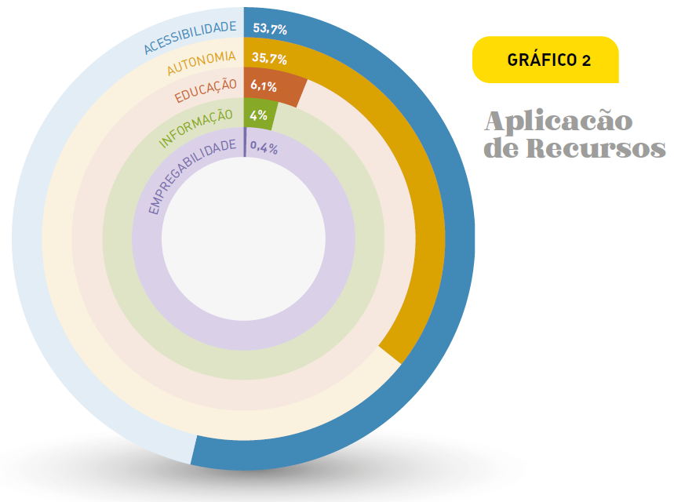
6
Parceiros
de Visão
Conheça as empresas que fizeram parte das conquistas e avanços da Fundação Dorina, por meio de patrocínios aos projetos e outras contribuições e doações:
DIAMANTE
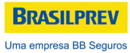
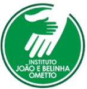
PRATA

BRONZE
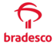
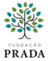
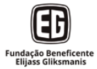
COBRE
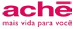
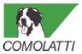
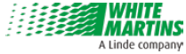

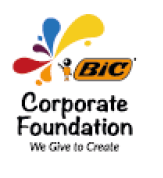
PARCEIROS INSTITUCIONAIS
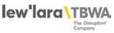
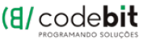
7
Faça parte
dessa História
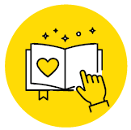
• SERVIÇOS DE APOIO À INCLUSÃO
Atendimento às pessoas cegas e com baixa visão.
atendimento@fundacaodorina.org.br
(11) 5087-0999 – Opção 2
(11) 5087-0998
• VISITA MONITORADA
centrodememoria@fundacaodorina.org.br
(11) 5087-0955
• CANAL DE RELACIONAMENTO COM O DOADOR
Faça uma doação e ajude a transformar a vida de pessoas com deficiência visual.
relacionamento@fundacaodorina.org.br
(11) 5087-0999 – Opção 4
• PATROCÍNIOS E PARCERIAS
Apoie os projetos da Fundação Dorina por meio das Leis de Incentivo, para abatimento de impostos, ou fazendo patrocínios diretos.
parceria@fundacaodorina.org.br
(11) 5087-0982
• SOLUÇÕES EM ACESSIBILIDADE
Contate nossa equipe para tornar seus produtos e serviços mais acessíveis.
comercial@fundacaodorina.org.br
(11) 5087-0999 – Opção 1
• SEJA UM VOLUNTÁRIO
voluntariado@fundacaodorina.org.br
(11) 5087-0971
Expediente
Superintendência Executiva
Alexandre Munck
Gerência de Captação de Recursos e Marketing
Taisa Pelucio
Coordenação de Comunicação e Marketing
Carolina Orilio
Produção de Conteúdo
Ariett Gouveia
Revisão
Carolina Orilio
W5 Publicidade
Apoio
Cláudia Piazza Costa
Rodrigo Torres
Thamiris Treigher
Fotografias
Acervo da Fundação Dorina
Antonio Vinícius Lemos
Cecília Furtado
Cléo Acevili
Rodrigo Torres
Projeto Gráfico e Diagramação
W5 Publicidade
SIGA A FUNDAÇÃO DORINA NAS REDES SOCIAIS
fundacaodorinanowill
fundacaodorina
fundacaodorina
fundacaodorina
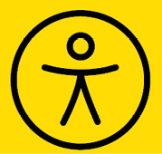
Escaneie o QR Code e tenha acesso à VERSÃO COM ACESSIBILIDADE
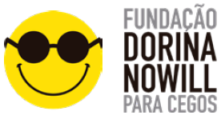
Fundação Dorina Nowill para Cegos
Rua Doutor Diogo de Faria, 558
Vila Clementino
CEP: 04037-001
São Paulo/SP - Brasil
fundacaodorina.org.br
+55 (11) 5087-0999 / (11) 5554-0999
***
HTML
Produzido por Fundação Dorina Nowill para Cegos
*
Linearização: Letícia Saracini Duarte
Descrição de imagens: Letícia Saracini Duarte
Diagramação: Bruno Alves Suniga
Revisão: Marina Vargas O. Angelelli
Supervisão: Marina Vargas O. Angelelli